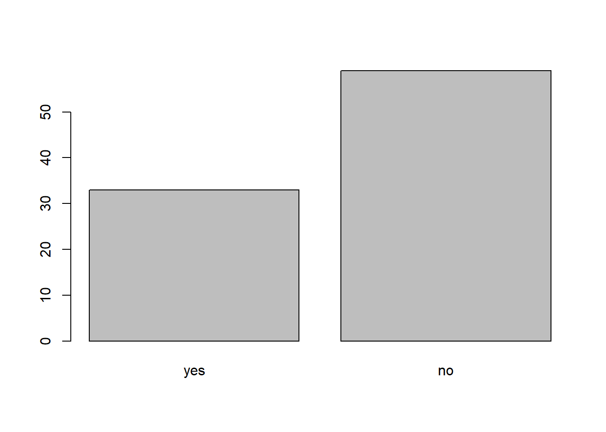

Lesson 8 Advanced variable creation with forcats
teaching: 60
exercises: 15
adapted from:
questions:
- “How can I easily create new categorical variables?”
objectives:
keypoints:
library(tidyverse)
interviews <- read_csv("data/SAFI_clean.csv", na = "NULL")8.1 Factors
R has a special data class, called factor, to deal with categorical data that you may encounter when creating plots or doing statistical analyses. Factors are very useful and actually contribute to making R particularly well suited to working with data. So we are going to spend a little time introducing them.
Factors represent categorical data. They are stored as integers associated with labels and they can be ordered or unordered. While factors look (and often behave) like character vectors, they are actually treated as integer vectors by R. So you need to be very careful when treating them as strings.
Factors are particularly useful when making plots or running statistical models. Unfortunately, they can also be very tricky to work with, because they are secretly numbers behind the scenes. Working with factors in base R can lead to errors that are almost impossible for human analysts to catch, but there is a tidyverse package that makes it much easier to work with factors, and prevents many common mistakes. It is called forcats (an anagram of the word “factors” and also because it is a package for working with categorical variables).
Let’s load the forcats package so we can use the functions it comes with
library(forcats)Once created, factors can only contain a pre-defined set of values, known as levels. By default, base R always sorts levels in alphabetical order. For instance, if you have a factor with 2 levels:
factor(c("earth", "cement", "cement", "earth"))## [1] earth cement cement earth
## Levels: cement earthR will assign 1 to the level "cement" and 2 to the level "earth" (because c comes before e in the alphabet, even though the first element in this vector is"earth").
In R’s memory, factors are represented by integers (1, 2), but are more informative than integers because factors are self describing: "cement", "earth" is more descriptive than 1, and 2. Which one is “earth”? You wouldn’t be able to tell just from the integer data. Factors, on the other hand, have this information built in. It is particularly helpful when there are many levels.
However, the default ordering of levels in base R is less than ideal, because it depends on the language you have set for your R session, and can lead to un-reproducble code.
In the forcats package, there is a function that makes a factor but creates the levels in the order they appear.
respondent_floor_type <- as_factor(c("earth", "cement", "cement", "earth"))
respondent_floor_type## [1] earth cement cement earth
## Levels: earth cementYou can see the levels and their order by using the function levels() and you can find the number of levels using nlevels():
levels(respondent_floor_type)## [1] "earth" "cement"nlevels(respondent_floor_type)## [1] 28.2 reordering factor levels
Sometimes, the order of the factors does not matter, other times you might want to specify the order because it is meaningful (e.g., “low”, “medium”, “high”), it improves your visualization, or it is required by a particular type of analysis. In forcats, one way to reorder our levels in the respondent_floor_type vector would be:
respondent_floor_type # current order## [1] earth cement cement earth
## Levels: earth cementrespondent_floor_type <- fct_relevel(respondent_floor_type, "cement", "earth")
respondent_floor_type # after re-ordering## [1] earth cement cement earth
## Levels: cement earthThis is perhaps easier to see with a few more factor levels. Let’s use our real data,
respondent_floor_type <- as_factor(interviews$respondent_wall_type)
levels(respondent_floor_type)## [1] "muddaub" "burntbricks" "sunbricks" "cement"Say we want sunbricks to come first in the factor order. We can use fct_relevel to move it up.
respondent_floor_type # current order## [1] muddaub muddaub burntbricks burntbricks burntbricks muddaub
## [7] muddaub burntbricks burntbricks burntbricks sunbricks burntbricks
## [13] burntbricks burntbricks sunbricks muddaub sunbricks muddaub
## [19] burntbricks burntbricks burntbricks muddaub burntbricks burntbricks
## [25] burntbricks burntbricks burntbricks muddaub burntbricks muddaub
## [31] muddaub muddaub muddaub burntbricks muddaub sunbricks
## [37] burntbricks muddaub muddaub burntbricks muddaub sunbricks
## [43] muddaub muddaub muddaub burntbricks muddaub muddaub
## [49] burntbricks muddaub muddaub burntbricks burntbricks muddaub
## [55] muddaub burntbricks burntbricks burntbricks muddaub burntbricks
## [61] muddaub muddaub muddaub muddaub burntbricks burntbricks
## [67] burntbricks burntbricks muddaub burntbricks burntbricks burntbricks
## [73] burntbricks burntbricks burntbricks burntbricks burntbricks sunbricks
## [79] muddaub sunbricks muddaub muddaub muddaub burntbricks
## [85] burntbricks burntbricks burntbricks muddaub burntbricks muddaub
## [91] burntbricks burntbricks burntbricks sunbricks burntbricks muddaub
## [97] sunbricks burntbricks burntbricks muddaub sunbricks sunbricks
## [103] sunbricks sunbricks sunbricks burntbricks muddaub burntbricks
## [109] muddaub sunbricks burntbricks burntbricks muddaub burntbricks
## [115] burntbricks muddaub sunbricks burntbricks burntbricks muddaub
## [121] muddaub burntbricks burntbricks sunbricks burntbricks burntbricks
## [127] burntbricks cement muddaub burntbricks burntbricks
## Levels: muddaub burntbricks sunbricks cementrespondent_floor_type <- fct_relevel(respondent_floor_type, "sunbricks")
respondent_floor_type # after re-ordering## [1] muddaub muddaub burntbricks burntbricks burntbricks muddaub
## [7] muddaub burntbricks burntbricks burntbricks sunbricks burntbricks
## [13] burntbricks burntbricks sunbricks muddaub sunbricks muddaub
## [19] burntbricks burntbricks burntbricks muddaub burntbricks burntbricks
## [25] burntbricks burntbricks burntbricks muddaub burntbricks muddaub
## [31] muddaub muddaub muddaub burntbricks muddaub sunbricks
## [37] burntbricks muddaub muddaub burntbricks muddaub sunbricks
## [43] muddaub muddaub muddaub burntbricks muddaub muddaub
## [49] burntbricks muddaub muddaub burntbricks burntbricks muddaub
## [55] muddaub burntbricks burntbricks burntbricks muddaub burntbricks
## [61] muddaub muddaub muddaub muddaub burntbricks burntbricks
## [67] burntbricks burntbricks muddaub burntbricks burntbricks burntbricks
## [73] burntbricks burntbricks burntbricks burntbricks burntbricks sunbricks
## [79] muddaub sunbricks muddaub muddaub muddaub burntbricks
## [85] burntbricks burntbricks burntbricks muddaub burntbricks muddaub
## [91] burntbricks burntbricks burntbricks sunbricks burntbricks muddaub
## [97] sunbricks burntbricks burntbricks muddaub sunbricks sunbricks
## [103] sunbricks sunbricks sunbricks burntbricks muddaub burntbricks
## [109] muddaub sunbricks burntbricks burntbricks muddaub burntbricks
## [115] burntbricks muddaub sunbricks burntbricks burntbricks muddaub
## [121] muddaub burntbricks burntbricks sunbricks burntbricks burntbricks
## [127] burntbricks cement muddaub burntbricks burntbricks
## Levels: sunbricks muddaub burntbricks cementThe fct_relevel function allows you to move any number of levels to any location. If you re-specify the entire list of levels, it will re-order the whole list. But, if you just specify one level (like we did here) that level gets moved to the front of the list.
Most of the useful functions in forcats start with fct_, so you can try typing that much in your Console or code chunk and hitting Tab to use the code completion feature in RStudio to see what some of the other functions are called.
Another way to re-order your factor levels is by frequency, so the most common factor levels come first, and the less common come later. (This is often useful for plotting!)
levels(respondent_floor_type)## [1] "sunbricks" "muddaub" "burntbricks" "cement"respondent_floor_type <- fct_infreq(respondent_floor_type, ordered = TRUE)
levels(respondent_floor_type)## [1] "burntbricks" "muddaub" "sunbricks" "cement"8.3 renaming factor levels
forcats makes easy to rename factor levels. Let’s say we made a mistake and need to recode “cement” to “brick”. We’d use the fct_recode function to do this.
levels(respondent_floor_type)## [1] "burntbricks" "muddaub" "sunbricks" "cement"respondent_floor_type <- fct_recode(respondent_floor_type, brick = "cement")
levels(respondent_floor_type)## [1] "burntbricks" "muddaub" "sunbricks" "brick"respondent_floor_type## [1] muddaub muddaub burntbricks burntbricks burntbricks muddaub
## [7] muddaub burntbricks burntbricks burntbricks sunbricks burntbricks
## [13] burntbricks burntbricks sunbricks muddaub sunbricks muddaub
## [19] burntbricks burntbricks burntbricks muddaub burntbricks burntbricks
## [25] burntbricks burntbricks burntbricks muddaub burntbricks muddaub
## [31] muddaub muddaub muddaub burntbricks muddaub sunbricks
## [37] burntbricks muddaub muddaub burntbricks muddaub sunbricks
## [43] muddaub muddaub muddaub burntbricks muddaub muddaub
## [49] burntbricks muddaub muddaub burntbricks burntbricks muddaub
## [55] muddaub burntbricks burntbricks burntbricks muddaub burntbricks
## [61] muddaub muddaub muddaub muddaub burntbricks burntbricks
## [67] burntbricks burntbricks muddaub burntbricks burntbricks burntbricks
## [73] burntbricks burntbricks burntbricks burntbricks burntbricks sunbricks
## [79] muddaub sunbricks muddaub muddaub muddaub burntbricks
## [85] burntbricks burntbricks burntbricks muddaub burntbricks muddaub
## [91] burntbricks burntbricks burntbricks sunbricks burntbricks muddaub
## [97] sunbricks burntbricks burntbricks muddaub sunbricks sunbricks
## [103] sunbricks sunbricks sunbricks burntbricks muddaub burntbricks
## [109] muddaub sunbricks burntbricks burntbricks muddaub burntbricks
## [115] burntbricks muddaub sunbricks burntbricks burntbricks muddaub
## [121] muddaub burntbricks burntbricks sunbricks burntbricks burntbricks
## [127] burntbricks brick muddaub burntbricks burntbricks
## Levels: burntbricks < muddaub < sunbricks < brick8.3.1 Converting factors
If you are working in the tidyverse, your data will come in with very few factor variables by default. So, the most common conversion you will need to do is from a character vector to a factor, like we did before,
as_factor(c("earth", "cement", "cement", "earth"))## [1] earth cement cement earth
## Levels: earth cementIf you find yourself with many factors you need to convert to character vectors, it’s good to check your read-in code first, to see if you accidentally used read.csv instead of read_csv. In the unlikely event you need to convert a factor to a character vector, you use as.character(x).
as.character(respondent_floor_type)## [1] "muddaub" "muddaub" "burntbricks" "burntbricks" "burntbricks"
## [6] "muddaub" "muddaub" "burntbricks" "burntbricks" "burntbricks"
## [11] "sunbricks" "burntbricks" "burntbricks" "burntbricks" "sunbricks"
## [16] "muddaub" "sunbricks" "muddaub" "burntbricks" "burntbricks"
## [21] "burntbricks" "muddaub" "burntbricks" "burntbricks" "burntbricks"
## [26] "burntbricks" "burntbricks" "muddaub" "burntbricks" "muddaub"
## [31] "muddaub" "muddaub" "muddaub" "burntbricks" "muddaub"
## [36] "sunbricks" "burntbricks" "muddaub" "muddaub" "burntbricks"
## [41] "muddaub" "sunbricks" "muddaub" "muddaub" "muddaub"
## [46] "burntbricks" "muddaub" "muddaub" "burntbricks" "muddaub"
## [51] "muddaub" "burntbricks" "burntbricks" "muddaub" "muddaub"
## [56] "burntbricks" "burntbricks" "burntbricks" "muddaub" "burntbricks"
## [61] "muddaub" "muddaub" "muddaub" "muddaub" "burntbricks"
## [66] "burntbricks" "burntbricks" "burntbricks" "muddaub" "burntbricks"
## [71] "burntbricks" "burntbricks" "burntbricks" "burntbricks" "burntbricks"
## [76] "burntbricks" "burntbricks" "sunbricks" "muddaub" "sunbricks"
## [81] "muddaub" "muddaub" "muddaub" "burntbricks" "burntbricks"
## [86] "burntbricks" "burntbricks" "muddaub" "burntbricks" "muddaub"
## [91] "burntbricks" "burntbricks" "burntbricks" "sunbricks" "burntbricks"
## [96] "muddaub" "sunbricks" "burntbricks" "burntbricks" "muddaub"
## [101] "sunbricks" "sunbricks" "sunbricks" "sunbricks" "sunbricks"
## [106] "burntbricks" "muddaub" "burntbricks" "muddaub" "sunbricks"
## [111] "burntbricks" "burntbricks" "muddaub" "burntbricks" "burntbricks"
## [116] "muddaub" "sunbricks" "burntbricks" "burntbricks" "muddaub"
## [121] "muddaub" "burntbricks" "burntbricks" "sunbricks" "burntbricks"
## [126] "burntbricks" "burntbricks" "brick" "muddaub" "burntbricks"
## [131] "burntbricks"Converting factors where the levels appear as numbers (such as concentration levels, or years) to a numeric vector is a little trickier. This is where many mistakes with factor variables are made. The as.numeric() function returns the index values of the factor, not its levels, so it will result in an entirely new (and unwanted in this case) set of numbers. One method to avoid this is to convert factors to characters, and then to numbers. Compare:
year_fct <- factor(c(1990, 1983, 1977, 1998, 1990))
as.numeric(year_fct) # Wrong! And there is no warning...## [1] 3 2 1 4 3as.numeric(as.character(year_fct)) # The recommended way.## [1] 1990 1983 1977 1998 1990Again, if you find yourself doing this, you may want to check your data read-in code!
8.3.2 Renaming factors
When your data is stored as a factor, you can use the plot() function to get a quick glance at the number of observations represented by each factor level. Let’s convert the memb_assoc column from our data frame into a factor, and use it to look at the number of interview respondents who were or were not members of an irrigation association:
## convert it into a factor
interviews <- interviews %>%
mutate(memb_assoc = as_factor(memb_assoc))
interviews$memb_assoc## [1] <NA> yes <NA> <NA> <NA> <NA> no yes no no <NA> yes no <NA> yes
## [16] <NA> <NA> <NA> <NA> <NA> no <NA> <NA> no no no <NA> no yes <NA>
## [31] <NA> yes no yes yes yes <NA> yes <NA> yes <NA> no no <NA> no
## [46] no yes <NA> <NA> yes <NA> no yes no <NA> yes no no <NA> no
## [61] yes <NA> <NA> <NA> no yes no no no no yes <NA> no yes <NA>
## [76] <NA> yes no no yes no no yes no yes no no <NA> yes yes
## [91] yes yes yes no no no no yes no no yes yes no <NA> no
## [106] no <NA> no no <NA> no <NA> <NA> no no no no yes no no
## [121] no no no no no no no no no yes <NA>
## Levels: yes no## bar plot of the number of interview respondents who were
## members of irrigation association:
plot(interviews$memb_assoc)
Looking at the plot compared to the output of the vector, we can see that n addition to “no”s and “yes”s, there are about some respondents for which the information about whether they were part of an irrigation association hasn’t been recorded, and encoded as missing data. They do not appear on the plot. Let’s encode them differently so they can counted and visualized in our plot.
## replace the missing data with "undetermined"
interviews <- interviews %>%
mutate(memb_assoc = fct_explicit_na(memb_assoc, na_level = "undetermined"))
interviews$memb_assoc## [1] undetermined yes undetermined undetermined undetermined
## [6] undetermined no yes no no
## [11] undetermined yes no undetermined yes
## [16] undetermined undetermined undetermined undetermined undetermined
## [21] no undetermined undetermined no no
## [26] no undetermined no yes undetermined
## [31] undetermined yes no yes yes
## [36] yes undetermined yes undetermined yes
## [41] undetermined no no undetermined no
## [46] no yes undetermined undetermined yes
## [51] undetermined no yes no undetermined
## [56] yes no no undetermined no
## [61] yes undetermined undetermined undetermined no
## [66] yes no no no no
## [71] yes undetermined no yes undetermined
## [76] undetermined yes no no yes
## [81] no no yes no yes
## [86] no no undetermined yes yes
## [91] yes yes yes no no
## [96] no no yes no no
## [101] yes yes no undetermined no
## [106] no undetermined no no undetermined
## [111] no undetermined undetermined no no
## [116] no no yes no no
## [121] no no no no no
## [126] no no no no yes
## [131] undetermined
## Levels: yes no undetermined## bar plot of the number of interview respondents who were
## members of irrigation association:
plot(interviews$memb_assoc)Again, if we wanted to reorder our factor here in order of
interviews <- interviews %>%
mutate(memb_assoc = fct_infreq(memb_assoc, ordered = TRUE))
plot(interviews$memb_assoc)
interviews <- interviews %>%
mutate(memb_assoc = fct_relevel(memb_assoc, "No", "Yes", "Undetermined"))## Warning: Unknown levels in `f`: No, Yes, Undetermined8.3.2 Exercise
Rename the levels of the factor to have the first letter in uppercase: “No”,“Undetermined”, and “Yes”.
Now that we have renamed the factor level to “Undetermined”, can you recreate the barplot such that “Undetermined” is last (after “Yes”)?
8.3.2 Solution
interviews <- interviews %>% mutate(memb_assoc = fct_recode(memb_assoc, No = "no", Yes = "yes", Undetermined = "undetermined")) plot(interviews$memb_assoc)interviews <- interviews %>% mutate(memb_assoc = fct_relevel(memb_assoc, "No", "Yes", "Undetermined")) plot(interviews$memb_assoc)
8.4 strings
Much like forcats helps us deal with factor variables, there are packages to help us deal with string variables. Some useful packages are the tidyr package (which we’ve already seen) the stringr package (installed with the tidyverse, but needs to be loaded separately) and the tidytext package. Let’s say we’re interested in the items owned by the interviewees. Right now, all the items are stuck together into one not-very-useful variable,
interviews %>%
select(items_owned)## # A tibble: 131 x 1
## items_owned
## <chr>
## 1 bicycle;television;solar_panel;table
## 2 cow_cart;bicycle;radio;cow_plough;solar_panel;solar_torch;table;mobile_phone
## 3 solar_torch
## 4 bicycle;radio;cow_plough;solar_panel;mobile_phone
## 5 motorcyle;radio;cow_plough;mobile_phone
## 6 <NA>
## 7 motorcyle;cow_plough
## 8 motorcyle;bicycle;television;radio;cow_plough;solar_panel;solar_torch;table;…
## 9 television;solar_panel;solar_torch
## 10 cow_cart;motorcyle;bicycle;television;radio;cow_plough;solar_panel;solar_tor…
## # … with 121 more rowsWe’d like to know which interviewees own a bicycle, for example. One way to do this would be to use the stringr package to check if a particular string was contained in that variable,
library(stringr)
interviews <- interviews %>%
mutate(has_bicycle = str_detect(items_owned, "bicycle"))
plot(factor(interviews$has_bicycle))Much like the forcats package, the stringr package has many functions that begin with str_, so you can type that much out and hit Tab to see other options.
We could go through manually and repeat a similar set of lines of code for each item (solar_torch, cow_plough, etc) but there is a programming principle that if you repeat yourself there is likely a more efficient way to do it.
In this case, that more efficient solution is to use the tidytext package, which lets us “unnest” the data into individual words. When we start working with text in this way, it can get a little messy, so it is often smart to break off a little piece of your data to work with separately. Here we’re taking just the items_owned variable and the instanceID (so we can join this back together with our original data later, if we so choose).
items <- interviews %>%
select(items_owned, instanceID)library(tidytext)## Warning: package 'tidytext' was built under R version 3.6.2items <- items %>%
unnest_tokens(word, items_owned)Now we have a variable called word, which is all the separate items. This is a very long dataset, so we may want to pivot_wider to make it easier to see.
items <- items %>%
mutate(contains = if_else(is.na(word), FALSE, TRUE))
items <- items %>%
pivot_wider(names_from = word, values_from = contains, values_fill = list(contains = FALSE))If we’d like, we can now use a join to stick this back to our main dataset,
interviews <- interviews %>%
left_join(items)## Joining, by = "instanceID"Now we can see what each person owned.
8.5 Formatting Dates
One of the most common issues that new (and experienced!) R users have is converting date and time information into a variable that is appropriate and usable during analyses. As a reminder from earlier in this lesson, the best practice for dealing with date data is to ensure that each component of your date is stored as a separate variable. In our dataset, we have a column interview_date which contains information about the year, month, and day that the interview was conducted. Let’s convert those dates into three separate columns.
str(interviews)We are going to use the package lubridate (which belongs to the tidyverse; learn more here) to work with dates. lubridate gets installed as part as the tidyverse installation. When you load the tidyverse (library(tidyverse)), the core packages (the packages used in most data analyses) get loaded. lubridate however does not belong to the core tidyverse, so you have to load it explicitly with library(lubridate)
Start by loading the required package:
library(lubridate)The lubridate function ymd() takes a vector representing year, month, and day, and converts it to a Date vector. Date is a class of data recognized by R as being a date and can be manipulated as such. The argument that the function requires is flexible, but, as a best practice, is a character vector formatted as “YYYY-MM-DD”.
Let’s extract our interview_date column and inspect the structure:
dates <- interviews$interview_date
str(dates)## POSIXct[1:131], format: "2016-11-17" "2016-11-17" "2016-11-17" "2016-11-17" "2016-11-17" ...When we imported the data in R, read_csv() recognized that this column contained date information. We can now use the day(), month() and year() functions to extract this information from the date, and create new columns in our data frame to store it:
interviews$day <- day(dates)
interviews$month <- month(dates)
interviews$year <- year(dates)
interviews## # A tibble: 131 x 36
## key_ID village interview_date no_membrs years_liv respondent_wall… rooms
## <dbl> <chr> <dttm> <dbl> <dbl> <chr> <dbl>
## 1 1 God 2016-11-17 00:00:00 3 4 muddaub 1
## 2 1 God 2016-11-17 00:00:00 7 9 muddaub 1
## 3 3 God 2016-11-17 00:00:00 10 15 burntbricks 1
## 4 4 God 2016-11-17 00:00:00 7 6 burntbricks 1
## 5 5 God 2016-11-17 00:00:00 7 40 burntbricks 1
## 6 6 God 2016-11-17 00:00:00 3 3 muddaub 1
## 7 7 God 2016-11-17 00:00:00 6 38 muddaub 1
## 8 8 Chirod… 2016-11-16 00:00:00 12 70 burntbricks 3
## 9 9 Chirod… 2016-11-16 00:00:00 8 6 burntbricks 1
## 10 10 Chirod… 2016-12-16 00:00:00 12 23 burntbricks 5
## # … with 121 more rows, and 29 more variables: memb_assoc <ord>,
## # affect_conflicts <chr>, liv_count <dbl>, items_owned <chr>, no_meals <dbl>,
## # months_lack_food <chr>, instanceID <chr>, has_bicycle <lgl>, bicycle <lgl>,
## # television <lgl>, solar_panel <lgl>, table <lgl>, cow_cart <lgl>,
## # radio <lgl>, cow_plough <lgl>, solar_torch <lgl>, mobile_phone <lgl>,
## # motorcyle <lgl>, `NA` <lgl>, fridge <lgl>, electricity <lgl>,
## # sofa_set <lgl>, lorry <lgl>, sterio <lgl>, computer <lgl>, car <lgl>,
## # day <int>, month <dbl>, year <dbl>Notice the three new columns at the end of our data frame.